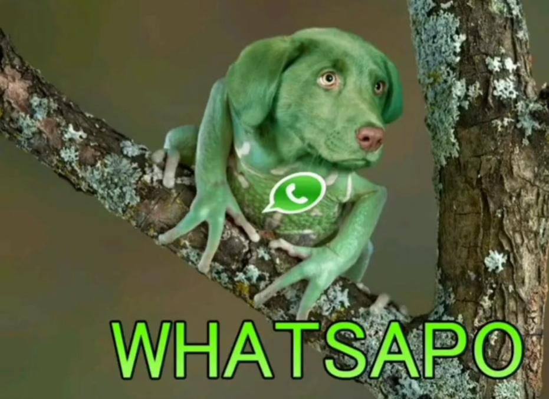

Whatsapo
Redes sociais
Contato
Telefone: 959 1337
Email: grogfifififiu@gmail.com
Endereço: Lagoa da Pampulha - Belo Horizonte - MG
Objetivos Profissionais
Devido à expansão das redes whatsapp ao mundo animal, procuro transmitir mensagens seja por água, seja por terra. Os peixes também precisam se comunicar e eu acredito ser a pessoa certa para isso!
Formação acadêmica
Ensino sapal até 3ª instância.
Atualmente cursando culinária à base de moscas e libélulas.
Qualificações
Agilidade em Terrenos Complexos
Comunicação Anfíbia
Resistência ao Vácuo.
Visão 360 Graus
Camuflagem de Status
Língua Retrátil de Resposta Rápida
Pulmões de Áudio
Gestão de Insetos (Bugs)
Navegação por GPS Biológico.
Persistência de Coaxar
Idiomas
Saponês nativo
Peixês avançado B40